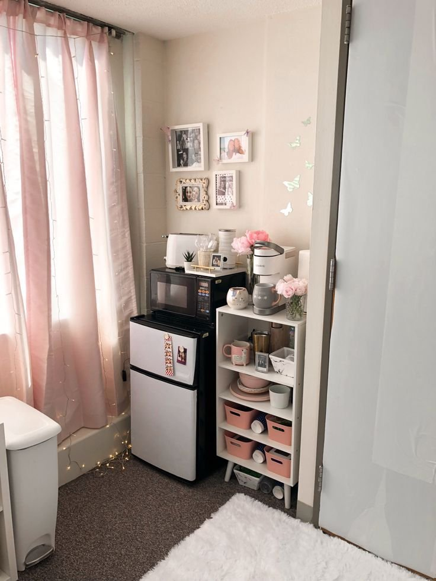
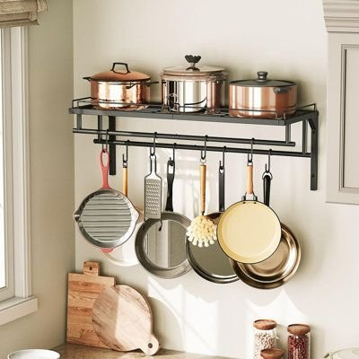
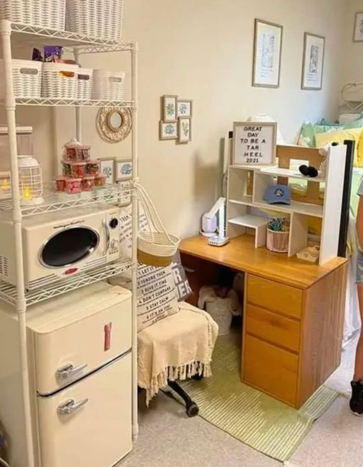
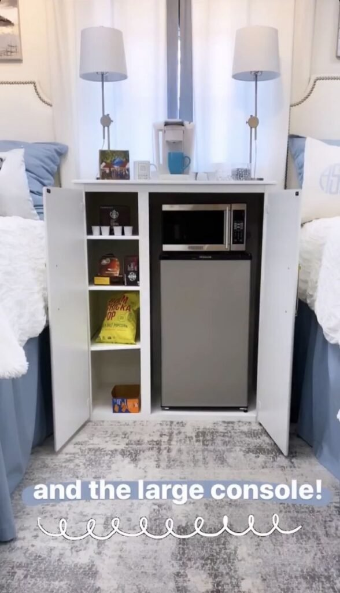
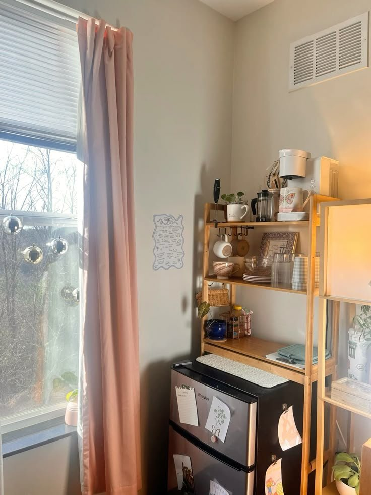
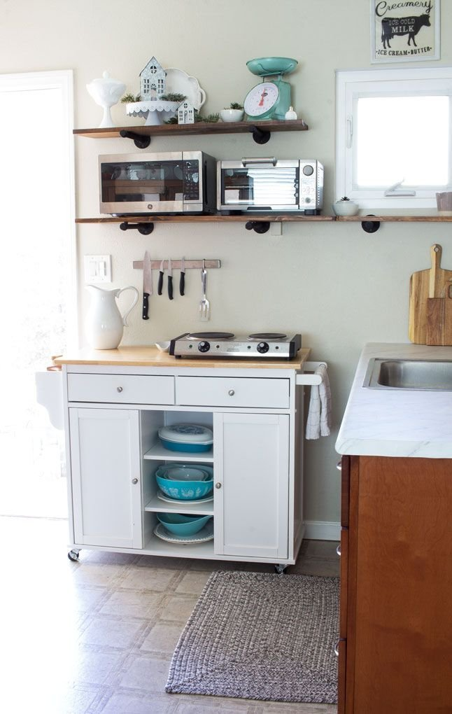
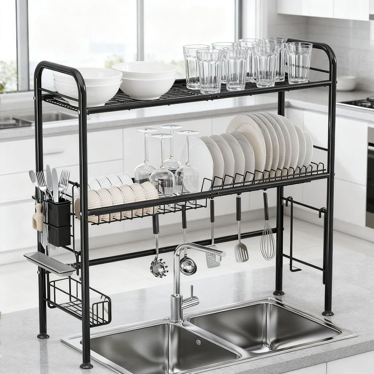
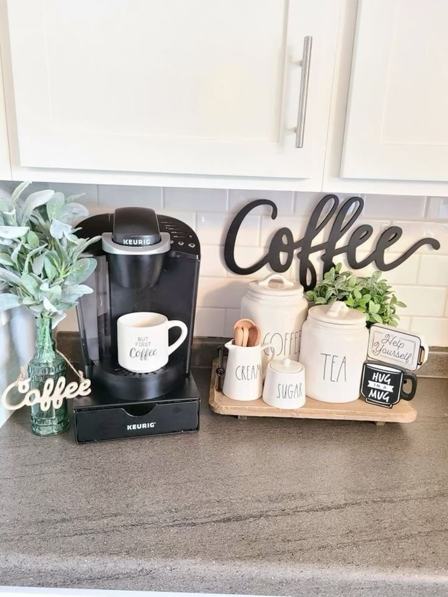
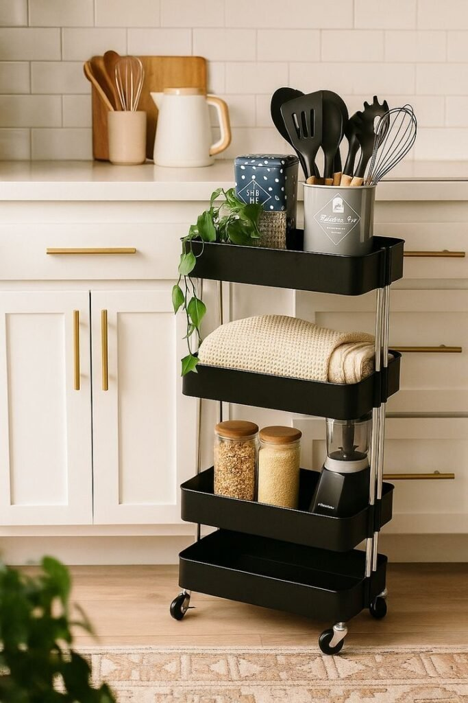

Walking into a first dorm kitchen is usually a mix of awe and panic. The counters are microscopic, the appliances all seem to conspire against you, and somehow you're expected to cook, store food, stay clean, and still make it look halfway decent, all in the footprint of a shoebox.
The good news: small doesn't mean useless. With the right setup, even a genuinely tiny dorm kitchen can feel surprisingly functional, and it comes down to one thing more than anything else, giving every item an actual home instead of letting things pile up wherever they land.
The twelve ideas below start with the smallest, cheapest fixes and work up toward the bigger furniture decisions, so there's somewhere to start whether move-in day is tomorrow or the kitchen's already a month into chaos.

Why Dorm Kitchens Feel Chaotic Fast
Most dorm kitchens feel overwhelming within a week, and it's rarely about the size itself, it's the lack of structure. Set one bowl down and the whole counter suddenly looks crowded, because there was never a designated place for it in the first place. Once you create actual zones for food, utensils, and appliances, even a genuinely tiny kitchen starts to feel manageable.
Every item counts more here than it would in a full-sized kitchen, too. There's no room for a stray bag of chips or a coffee maker camped out in the middle of your one workspace. Before buying anything, figure out what you'll actually use, a blender that also chops is worth it, a ten-piece waffle iron set almost never is. And don't skip vertical space: shelves, hooks, and wall-mounted racks can double your real storage without taking up a single inch of floor.

12 Dorm Kitchen Ideas Worth Trying
1. Hang Removable Hooks Wherever You Can
Removable adhesive hooks solve the problem every dorm kitchen has: you need more hanging storage, but you can't drill into the wall to get it.
Use them for utensils, towels, oven mitts, or small tools, anywhere a shelf won't fit but a single hook will. Corners and the wall above a sink are usually the best unclaimed real estate.
A row of hooks does more work than people expect, a wall-mounted rack can hold an entire set of pots, pans, and even cutting boards off the counter, all hanging in a strip that would otherwise sit flat against the wall doing nothing.

2. Group Items in Small Baskets
Small baskets are an underrated organizing tool, they group snacks, utensils, or cleaning supplies into visual units instead of letting everything spread loose across a shelf.
The effect is less about storage capacity and more about how the whole kitchen reads. Grouped items look intentional; loose items look like clutter, even when it's the same amount of stuff.
A wire shelving unit lined with a few matching baskets turns an ordinary dorm shelf into something that actually looks organized at a glance.

3. Choose Compact, Multi-Function Appliances
Full-sized appliances overwhelm a tiny kitchen fast. Mini blenders, small toasters, and single-serve coffee makers give you the same function in a fraction of the footprint.
Prioritize anything that does double duty, a blender that also chops, a toaster oven that replaces both a toaster and a mini oven. Fewer single-purpose gadgets means more usable counter.
A console with a coffee maker and lamps on top and a mini-fridge and microwave tucked behind closed doors below proves a few compact appliances can disappear into furniture instead of cluttering the room.

4. Go Vertical With a Tall Shelf Unit
Floor space in a dorm kitchenette is basically nonexistent, which makes vertical storage the single highest-leverage move you can make. A tall shelf unit turns unused air into real storage.
Stack a mini-fridge, microwave, and coffee maker into one column and you've consolidated three separate appliances into a single footprint instead of spreading them across the room.
A setup with the mini-fridge on the bottom, microwave and coffee station stacked above, and open shelving for mugs and snacks on top can genuinely double your usable storage without claiming any more floor.

5. Install Wall-Mounted Spice Racks
Spice racks mounted on the wall clear real estate off your counter and keep every seasoning visible at a glance, which genuinely changes how often you actually cook with them.
There's a practical psychology to it, when spices are tucked in a drawer, they get forgotten. When they're right there on the wall, you reach for them without thinking twice.
It adds a bit of personality too. A wall of neatly labeled jars does more visual work in a small kitchen than most decor items twice the size.
6. Mount a Magnetic Strip
Magnetic strips are one of those ideas that sound minor until you actually use one, then they become essential. Mounting knives and metal utensils on the wall frees up real drawer and counter space.
It also keeps everything visible, which matters more than it sounds like it should. You grab exactly what you need mid-cook instead of digging through a drawer one-handed.
A simple wall-mounted setup, like a knife strip next to a compact microwave-and-toaster-oven shelf, makes a tiny kitchen feel noticeably more organized for almost no cost.

7. Use Clip-On Counter Extensions
Clip-on cutting boards and colanders extend your prep space without any permanent installation at all, they just clamp onto the edge of your sink or counter when you need them.
It's a small add-on, but it solves a real problem: tiny kitchens rarely give you enough flat surface to actually chop, mix, and plate without things colliding.
Keep one or two on hand and bring them out only during active meal prep. The rest of the time, your counter stays exactly as small and clear as it was before.
8. Add an Over-the-Sink Shelf
The space directly over your sink is almost always wasted, and an over-the-sink shelf or rack puts it to work instead. It gives you a dedicated spot for drying dishes or holding soap and sponges.
The real benefit is zoning, your sink area stays dedicated to washing and prep, and the rest of your counter stays genuinely clear for everything else.
A two-tier version can handle glasses, bowls, plates, and utensils all at once, which is a lot of dish capacity for a footprint that otherwise sits empty.

9. Switch to a Collapsible Drying Rack
A traditional dish rack permanently eats up counter space you don't have to spare. A collapsible one solves that instantly, set it up when you need it, fold it flat when you don't.
It sounds like a minor swap, but the difference in how much usable counter you get back is significant in a space this size.
Dishwashing already feels like a chore in a cramped kitchenette. Removing the rack that's permanently in your way makes the whole routine noticeably less stressful.
10. Build a Mini Coffee Station
A dedicated coffee or tea corner makes mornings run smoother, and it's one of the easiest ways to make a dorm kitchenette feel like it actually belongs to you.
Keep mugs, pods, sugar, and cream together in one spot so the mess stays contained instead of spreading across every surface.
Even a small setup, complete with its own little "Coffee" sign, reads as intentional rather than thrown together, it's a small detail that adds real personality.

11. Keep Dishes and Containers Stackable
Stackable dishes and storage containers are quietly one of the biggest space-savers available to you. They cut down on cabinet clutter and make meal prep noticeably simpler.
Look for containers that nest inside each other and bowls that stack cleanly rather than at odd angles. Mismatched or bulky pieces are what make a tiny kitchen feel chaotic fast.
It pays off at move-out time too, a cabinet of stackables packs into a box in minutes, while mismatched dishware turns packing into its own project.
12. Get a Rolling Cart
A rolling cart might be the single most useful thing you can bring into a dorm kitchenette. It gives you extra counter space and storage without installing anything permanent.
Use it for snacks, utensils, even a small coffee station, the point is flexibility. Push it out of the way when you need floor space, roll it over when you're actually prepping food.
A three-tier version, with a towel, dry goods, and even a small blender tucked onto its shelves, basically works as a second kitchen that happens to have wheels.

Final Thoughts
A dorm kitchen is small, but it doesn't have to feel limiting. With a little intentional organization, a handful of clever tools, and some genuinely smart storage choices, even the tightest kitchenette can be functional, tidy, and honestly kind of enjoyable to use.
Start with two or three ideas from this list that actually fit how you cook, not all twelve at once. A dorm kitchen you've slowly made your own beats a perfectly organized one you never got around to finishing.
Give it a semester to actually settle before judging whether the setup works. Most of these fixes get adjusted once or twice once you see how you actually use the space day to day.